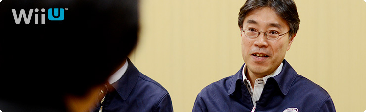
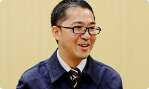
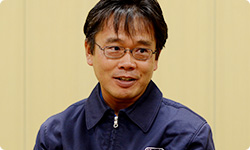
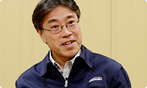

<div class="l-category-local-header">
<div class="category-local-header">
<div class="category-local-heading"><span>社長が訊く</span>
<div class="category-local-sub">IWATA ASKS


<div class="l-soft-topic-path is-block">
<div class="l-soft-topic-path-inner">
<div class="soft-topic-path">
<ul class="topic-path"><li class="topic-path-item"><span>『Wii U』 本体篇</span></li></ul>


<div id="page-container">
<header class="interviewheader">
<h2 class="interviewheader__ttl"><span class="subtext">社長が訊く</span>『Wii U』</h2>

</header>
<div class="tabmenu-container">
<p class="tabmenu__ttl">シリーズ一覧
<ul class="tabmenu__body tabnum12">
<li class="tabmenu__item tab1">本体 篇</li>
<li class="tabmenu__item tab2">Wii U GamePad 篇</li>
<li class="tabmenu__item tab3">Miiverse プロデュース 篇</li>
<li class="tabmenu__item tab4">Miiverse 開発スタッフ 篇</li>
<li class="tabmenu__item tab5">インターネットブラウザー 篇</li>
<li class="tabmenu__item tab6">Wii U Chat 篇</li>
<li class="tabmenu__item tab7">New スーパーマリオブラザーズ U 篇</li>
<li class="tabmenu__item tab8">ZombiU（ゾンビU） 篇</li>
<li class="tabmenu__item tab9">Nintendo×JOYSOUND Wii カラオケ U 篇</li>
<li class="tabmenu__item tab10">Nintendo Land 篇</li>
<li class="tabmenu__item tab11">Nintendo TVii 篇</li>
<li class="tabmenu__item tab12">Wii Street U powered by Google 篇</li>
</ul>

<div class="hero-container">
<div class="hero__img">

<div class="interviewsubheader">
<div class="interviewsubheader__ttl"><h2>本体篇</h2>

<div class="pageindex-container">
<p class="pageindex__ttl">目次
<ul class="pageindex__body">
<li class="pageindex__item">1. テレビが変わった</li>
<li class="pageindex__item">2. ハードは“黒子”</li>
<li class="pageindex__item active">3. “マジック”</li>
<li class="pageindex__item">4. テレビに寄生しないゲーム機</li>
</ul>

<div class="interview-container">
<h3 class="interview__ttl">3. “マジック”</h3>

岩田
: 今回、横置きと縦置きの話は議論されたんですか？


北野
: その議論は、当初からありました。<br>われわれ機構チームがWii Uの設計をスタートしたのが<br>２００９年４月頃でしたが、<br>当初はWiiタイプのほかに横長タイプとか、<br>ゲームキューブのような四角いタイプとか、<br>いろいろ検討していました。<br>でもわりと早い段階でWiiタイプに落ち着きました。




岩田
: 最初に発表した２０１１年のＥ３（※16）で、<br>「縦には置けないんですか？」とずいぶん聞かれました。<br>やっぱり“Wiiは縦に置くもの”と<br>考えておられる方がたくさんいるようでした。

※16Ｅ３＝Electronic Entertainment Expo（エレクトロニック エンターテインメント エキスポ）の略で、米国のロサンゼルスで開催されるコンピューターゲーム関連の見本市のこと。


北野
: Wiiが縦置きメインのデザインで世に出たので、<br>差別化をするために、Wii Uは横置きメインの<br>デザインにした、という経緯があります。<br>でも縦置きもできるよう、スタンドも用意しています。


岩田
: 今回、Wiiと比べて<br>ずっとパワフルなWii Uがこのサイズを保てたのは、<br>熱源がひとつになったことが大きかったわけですよね。<br>竹田さんが「ＭＣＭにしよう」と言っていたのは、<br>ずいぶん早かったと記憶しています。<br>しかも、複数の半導体メーカーさんがバラバラにつくったチップを<br>ひとつのパッケージに収めるという<br>前例のないつくりかたをするということで、<br>「完成したＭＣＭをどうやって検査をするのか？」<br>という問題について、活躍されたのが赤木さんですね。


赤木
: はい。でも、わたしだけ、というわけではなくて、<br>検査チームのみなさんにご協力をいただいて、<br>その成果を最終的な検査イメージにまとめるのが、<br>わたしの仕事でした。


岩田
: 完璧に検査を期すには、<br>時間をかけてあれもこれも調べればいいわけですが、<br>そうすると検査設備代と検査にかかる時間は<br>全部、コストに跳ね返ってしまいます。<br>ですから、漏れなく、かつ効率よく検査をするという、<br>一見、矛盾したことをやらなければいけないんですよね。


赤木
: はい。実際、初期の検査時間はかなり膨大で、<br>コストに見合うものではなかったんです。<br>でも、検査をする中で不良が出てきた場合、<br>各担当者に不良の内容を解析してもらって、<br>それをメーカーさんにフィードバックすることで、<br>検査時間を徐々に短縮していくことができました。


岩田
: どういうところを入念にチェックすればいいか、<br>ノウハウとしてたまっていった、ということですか？


赤木
: はい、そうです。<br>「ここは不良が出ないよね」<br>「ここは注意したほうがいい」と、<br> “検査の不良率”というかたちで明確にあらわれます。




岩田
: 統計上、安全度の高いところは検査パターンを減らして、<br>逆に高い頻度で問題が出る部分は<br>検査をしっかり維持するという、<br>検査のしかたにメリハリをつけることが大事なんですね。


赤木
: ただ、メリハリをつけたのに、<br>ちょっと時期が経つと、検査を減らした部分に<br>不良が出てくるという問題も起こりました。


塩田
: ＬＳＩ開発を担当するハードチームと<br>赤木さんのソフトチームとの間で、<br>ＬＳＩメーカーさんと協力しながら<br>不良解析をしてフィードバックする、<br>というループを数えきれないくらい、<br>何度も何度も行って時間を短くしていったんです。<br>やはり、ＣＰＵとＧＰＵがひとつになったことで、<br>最適なものにしていくのに<br>いままで以上に時間がかかりました。


赤木
: 不良の原因がわからなければ、<br>担当者が何社もＬＳＩメーカーさんを行脚しながら、<br>各メーカーさんのＬＳＩチップとの相性を見て検査に反映して、<br>ということをくり返したんです。


岩田
: 不良解析をして<br>「なぜ不良が起こるのか」を想像し、<br>プログラムをつくって試して、<br>実際にどうなるかを確認して・・・というくり返しを、<br>何百回もやりつづけていったんですね。


赤木
: はい。しかもすぐに不良が出ればいいんですけど、<br>１日、Wii Uの電源を入れたまま放置したら不良が出る、<br>という場合もありまして・・・。


岩田
: いわゆるエージング試験（※17）を行うんですね。

※17エージング試験＝検査する機器に、長時間負荷を加えながら、その後の動作を確認する試験のこと。


赤木
: はい。こういったことをつぶしておかないと、<br>最終的にお客さんの手元で不良が発生してしまいます。<br>とくに製品の終盤になってくると<br>時間がかかる検査が残っていきますので、<br>余計に１個１個の不良解析に時間がかかってしまいました。


塩田
: でも今回、おつき合いいただいたパートナーさんに、<br>前向きに解析にご協力いただけたんです。<br>本当に助かりました。


竹田
: これはゲーム機が持っている“マジック”だと思うんです。<br>いろんな会社さんと開発をいっしょに進めるわけですけど、<br>ＩＢＭさん、ＡＭＤさん、ルネサスさん、<br>それぞれの会社の社員・エンジニアというよりも、<br>“チーム任天堂”のメンバーになってしまうのです。<br>それが、なぜできたのかというと、<br>「これはお父さんがつくった商品なんだ」<br>と、子どもや孫や奥さんなど、<br>家族のみんなに話せるからみたいなんですね。<br>そういう意味で、参加者としてチーム全体で<br>モチベーションを上げられるところが、<br>ゲーム機ならではの、ひとつのよさだと思うんです。


岩田
: 単に「ＧＰＵを設計しました」ではなく、<br>「ゲーム機をつくっている」ということなんですね。<br>「別の会社なのに、ひとつのチームになれる」<br>というのは、ちょっと面白いところです。<br>だから、不良が発生した場合、自分の原因でなくても、<br>自分ごととして協力してくださる方々に、<br>我々は恵まれたんですね。


塩田
: じつは今回のＣＰＵ、ＧＰＵの設計者の中には、<br>Wiiの時代からご協力いただいている人もたくさんいて、<br>そういう方々とごいっしょできたこともプラスに働いています。<br>本当に我々の商品を好きでいてくれたので。


岩田
: 今回は、Wiiとの互換性も<br>持たせなければいけないですからね。


塩田
: はい。もともと設計の方が<br>Wiiのことをすごく知っておられたので、<br>WiiとWii Uはまったく違う構造にもかかわらず、<br>我々が思いつかないようなアイデアも出してくれました。<br>普通なら、Wii UとWiiというふたつの回路が、<br>“１＋１”で組み込まれるかたちになりそうなところを、<br>足し算ではなく、Wii Uで新たに追加した部分を<br>Wiiでも使えるように調整してくれたんです。


岩田
: そのぶん、半導体が小さくなったんですね。


塩田
: はい。そのうえ、電力も下げられました。<br>これはWiiを知ってくださっている<br>設計の方々だからこそ、出せるアイデアでした。<br>こういう知恵がたくさん出てきたからこそ、<br>ここまで小さな半導体をつくることができたんです。




<li class="pagination-prev"><span>2. ハードは“黒子”</span></li>
<li class="pagination-next"><span>4. テレビに寄生しないゲーム機</span></li>
</ul>
<div class="listbtn-container">
<p class="listbtn__item">社長が訊く 一覧

